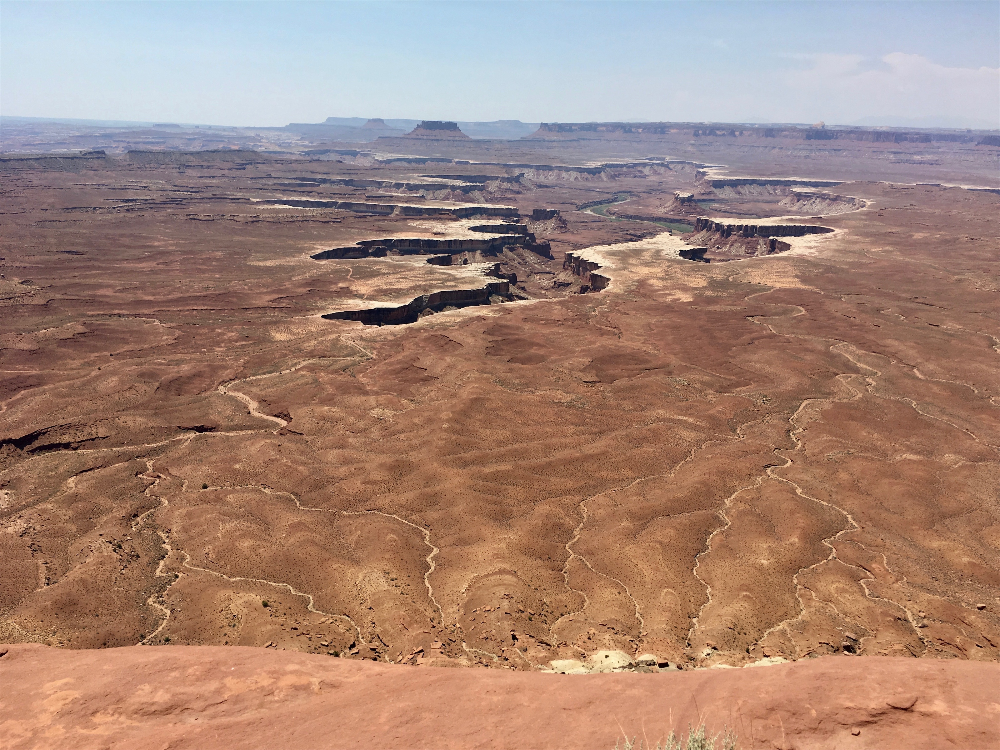
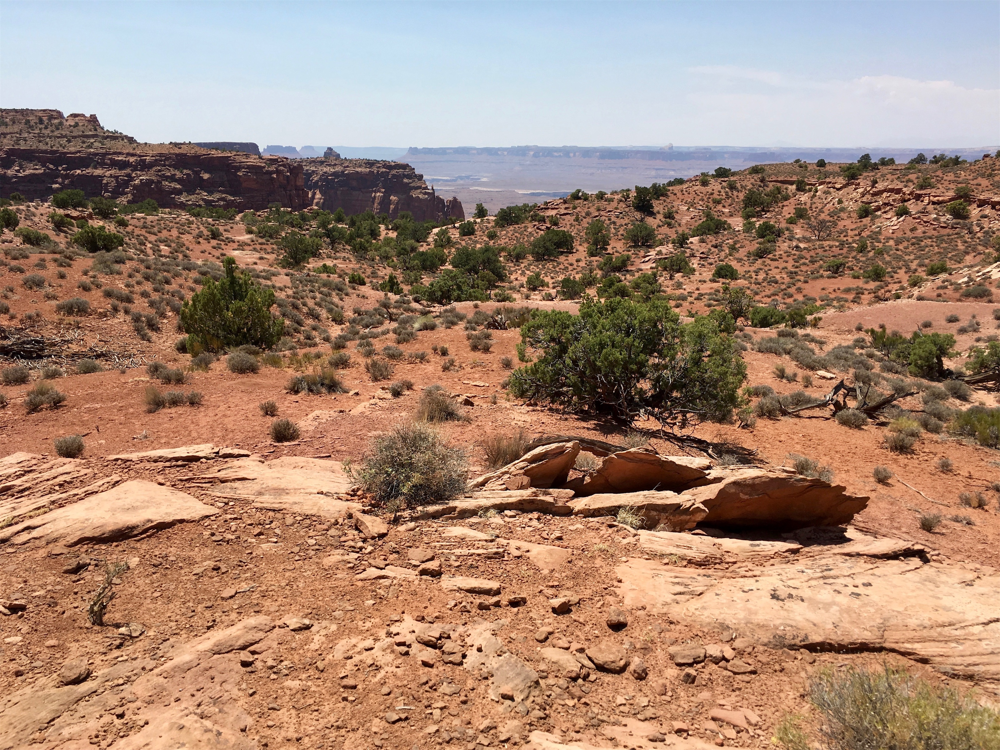
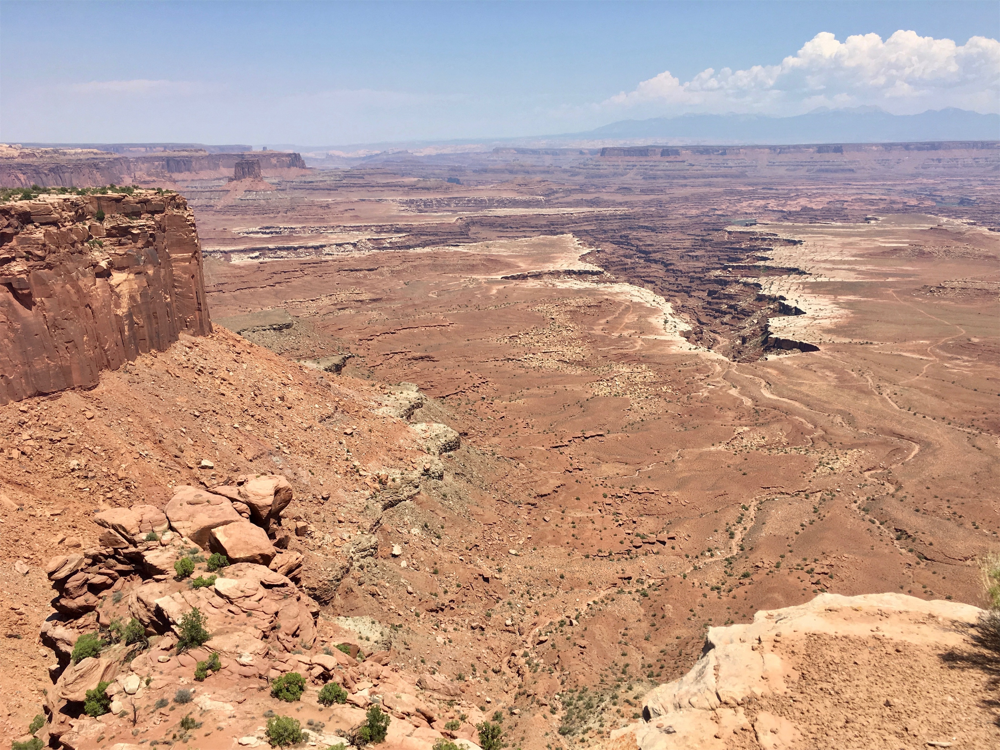
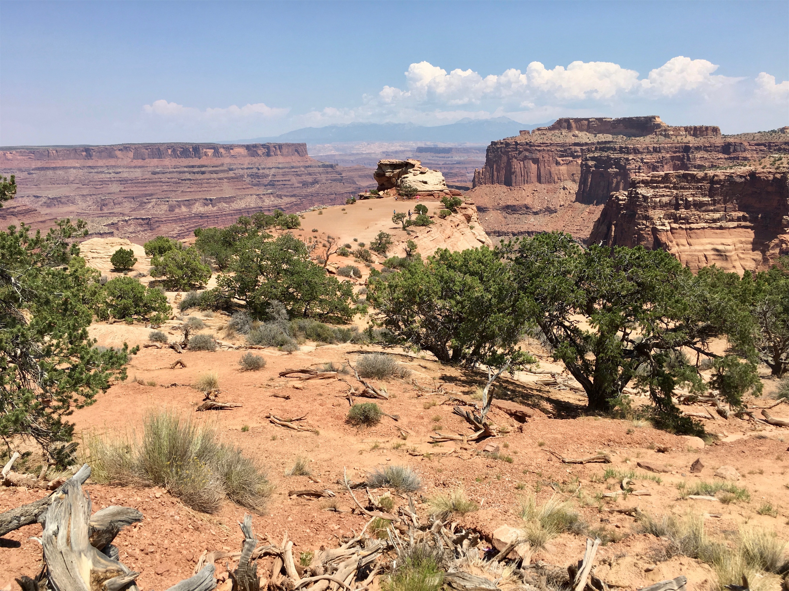

Sunday, Jul 29, 2018, 12:16 PM MDT
Island in the Sky Visitor Center, Monticello, UT, United States
86°F Sunny
86°F Sunny
![]()
7/29 Moab, UT -> Island in the Sky Visitor Center, UT 32 mi, 0.75 mi
7/29 Island in the Sky Visitor Center, UT -> Park Roads (RT) 45 mi,
7/29 Island in the Sky Visitor Center, UT -> Moab, UT 32 mi, 0.75 mi
Trip Total: 9,709 mi
Moab is also the gateway to our fifth and final Utah National Park. Canyonlands is just north of the confluence of the Green and Colorado Rivers, and those rivers divide the park into three areas that aren’t easily accessible from each other. We picked the most popular section, Island in the Sky, which is also the closest to Moab. It is located on a mesa with canyons on either side, formed by the two main rivers, thousands of feet above them. Given all the recent hikes and the hot weather, we decided to just drive all the park roads and do the small walks to the overlooks. Although it was a bit hazy, the views were unexpected and impressive, with colors that we haven’t seen before in canyons, like reddish purple.




